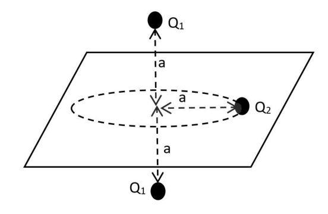
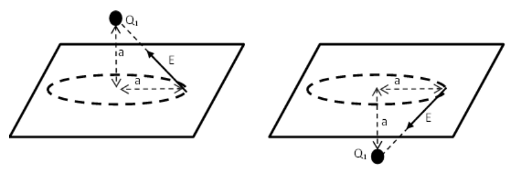
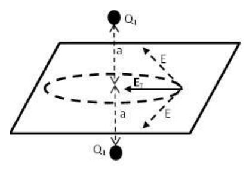

Problema 3
Dos cargas puntuales negativas () están separadas una distancia . Por el punto medio del segmento que las une se traza un plano perpendicular al mismo. Sobre este plano, una carga está realizando un movimiento circular uniforme de radio .
a) Si es un electrón y es igual a 1 nm ¿cuál es el módulo y dirección del campo eléctrico generado por las dos cargas en el sitio de la carga ?
b) ¿Cuál debe ser el signo de la carga para que esta realice el movimiento circular descripto?
Si el valor absoluto de la carga es equivalente a la del electrón, su signo el determinado en el punto anterior y su masa es equivalente a la de un protón:
c) ¿cuál es la velocidad de la carga ?
Datos Carga del electrón: C Masa del electrón: kg Masa del protón: kg 1 Nm = m (nanometro). Problema Teórico 1 Hoja de Respuesta Inciso
Puntaje a)
b)
c)
d) Problema Teórico 2 Hoja de Respuesta Inciso
Puntaje a)
b)
c) Problema Teórico 3 Hoja de Respuesta Inciso
Puntaje a)
b)
c) Olimpíada Argentina de Física
Pruebas Preparatorias Segunda Prueba: Termodinámica, Electricidad y Magnetismo Parte Experimental
Nombre: …
DNI: …
Escuela: …
- Antes de comenzar a resolver la prueba lea cuidadosamente TODO el enunciado de la misma.
- Escriba su nombre y su número de DNI en el sitio indicado. No escriba su nombre en ningún otro sitio de la prueba.
- No escriba respuestas en las hojas del enunciado pues no serán consideradas.
- Escriba en un solo lado de las hojas. Algo de un “casi-calorímetro” de Bunsen!!!
Un calorímetro es un instrumento de medición con el cual se pueden realizar los experimentos necesarios para determinar la capacidad calorífica de alguna substancia; en otras palabras, sirve para medir “calor”.
Entre los numerosos calorímetros que se han inventado está el de Bunsen. El mismo consiste en un recipiente lleno de hielo en fusión, que tiene en su interior una “burbuja” de vidrio (porta muestra), la cual está en contacto térmico con el hielo. El hielo fundente está en contacto con mercurio que llega hasta el tubo capilar. A su vez, TODO está sumergido en hielo fundente.
Cuando se introduce una muestra a una temperatura , en el porta muestra, parte del hielo se funde y la muestra alcanza los ; la mezcla agua-hielo cambia de volumen porque el hielo es menos denso que el agua. Este cambio de volumen se determina mediante el cambio en la posición del menisco de mercurio en el tubo capilar; recordemos que 1 g de agua a ocupa , mientras que 1 g de hielo ocupa . De este modo se determina la cantidad de calor que entregó la muestra y así se puede determinar su capacidad calorífica.
PARTE A Analice el principio de funcionamiento del calorímetro de Bunsen, encuentre la expresión matemática que vincula el calor específico de la sustancia que compone la muestra y el desplazamiento del menisco (cambio de volumen de la mezcla de agua con hielo).
PARTE B: CONSTRUCCIÓN DEL “CASI-CALORÍMETRO” DE BUNSEN. Para hacerlo puede utilizar:
- como contenedor de hielo fundente: un matraz de boca ancha o un frasco de mermelada/café en cuya tapa se realizaran los agujeros necesarios para instalar el porta muestra y el capilar.
- como capilar: un tubito fino transparente (el más fino del que se disponga), puede ser el que contiene la tinta en un bolígrafo/lapicera/portaminas o mangueritas muy finas. La disposición del tubo óptima es la horizontal (recomendado), aunque también puede instalarse en forma vertical.
- como porta muestra: puede ser un tubo de ensayo, un tubito plástico pequeño, la tapa de un lápiz de labios, de maquillaje, un tubito de “boligoma”, una jeringa tapada en donde va la aguja y sin embolo (OJO: en casos como el último, cuidado con las pérdidas).
- como sellador para evitar la pérdida de mezcla fundente: cola de carpintero, silicona, cera de vela, masilla, plastilina, etc. Los lugares de la tapa del frasco en los cuales se instalaron el capilar y el tubo porta muestras y la tapa misma, deben quedar correctamente sellados.
- para minimizar las pérdidas de calor deberá sumergir el dispositivo construido hasta aquí en otra mezcla de agua con hielo. Para ello puede utilizar algún tacho mediano/grande de telgopor, de plástico o una olla. OJO: la boca del capilar y del porta muestra no deben quedar sumergidas. Nota B1: a diferencia del calorímetro original de Bunsen, no utilizaremos mercurio. Para realizar la medición del cambio de volumen, en nuestro “casi-calorímetro” de Bunsen, el agua de la mezcla actuará como “pistón” e indicador en el tubo capilar. Nota B2: si lo considera necesario puede implementar una tapa para el porta muestra. Nota B3: necesitará mucho hielo.
PARTE C: UTILIZAR EL CALORÍMETRO CONSTRUIDO.
- Realice mediciones utilizando masas determinadas de agua a temperatura conocida, por ejemplo a . Repita las mediciones para cada masa, use al menos 5 masas diferentes.
- Verifique que el desplazamiento del “menisco de agua” en el tubo capilar es el esperado para las distintas masas usadas. Calibre el calorímetro considerando conocida la capacidad calorífica especifica del agua y el calor de fusión del hielo.
- Realice mediciones utilizando masas determinadas de aceite de cocina o de algún otro líquido, a temperatura conocida (por ejemplo ). Repita las mediciones para cada masa.
- Determine el calor específico del aceite de cocina o del líquido que utilizó.
Nota C1: Para determinar la masa de los líquidos muestra puede utilizar una balanza o una jeringa o una pipeta, siempre y cuando conozca las densidades de los mismos. Nota C2: Para calentar el “líquido muestra”, hasta los , puede utilizar un baño maría. Nota C3: no utilice líquidos inflamables. Problema Experimental Hoja de respuestas. Inciso
Puntaje PARTE A
PARTE B
PARTE C
Problema Teórico 1 Hoja de Respuesta Inciso
Puntaje a)
2 ptos. b)
3 ptos. c)
3 ptos. d)
2 ptos. Problema Teórico 2 Hoja de Respuesta Inciso
Puntaje a)
3 ptos. b)
3 ptos. c)
4 ptos. Problema Teórico 3 Hoja de Respuesta Inciso
Puntaje a)
4 ptos. b)
2 ptos. c)
4 ptos. Pruebas Preparatorias
Resolución Problema teórico 1.
En todos los cálculos es necesario uniformizar las unidades. a) La masa de nitrógeno líquido es
kg l l kg V m NL NL NL 035 ,4 5 807 ,0 2 2 2
La masa de nitrógeno gaseoso es
moles K K mol J l atm T R V P nN 791 ,0 77 31 ,8 5 1 2
kg uma kg mol uma mol mN 022 ,0 10 6605 ,1 10 022 ,6 0067 , 14 2 791 ,0 27 1 23 2
b) El calor cedido por el aluminio al enfriarse vaporiza LN2.
0 1 ) ( 2
v N i f Al Al C m T T C m
Donde m1N2 es la masa de LN2 que se vaporiza. Si esta masa es menor a la masa total de LN2 entonces el estado final será parte del nitrógeno en estado líquido, parte en estado gaseoso y el cubo de aluminio todo a una temperatura de 77 K. En caso de que la masa sea mayor a la masa inicial de LN2 se deberá plantear la ecuación teniendo en cuenta la vaporización de toda la masa inicial de LN2 y el calentamiento del gas N2. kg kg kJ K K K g cal g C T T C m m v i f Al Al N 099 ,0 202 ) 300 77 ( 214 ,0 100 ) ( 1 2
Como esta masa es menor a la masa inicial de LN2 entonces vemos que al introducir el cubo de aluminio sólo se vaporiza una parte del LN2. Entonces en el termo queda
kg kg kg mfLN 936 ,3 099 ,0 035 ,4 2

geometria due cariche Q1 e orbita Q2
campi elettrici delle due cariche Q1
campo elettrico totale ET nel pianoTopic: Electrostatics, Newtonian Mechanics Metodi: Coulomb’s Law, Free-Body Diagram, Vector Decomposition Competenze: Mathematical Modeling, Diagrammatic Reasoning Objects: Point Charge, Electron Fonte: Testo (PDF) — p.4
Figure
Figure
Figure
Figure
Figure
Figure
Figure
Figure
Figure
Figure
Figure
Figure
Figure
p.9 — calorimetro di Bunsen sezione trasversale
p.25 — curva di calibrazione calorimetro Qi vs Delta L
p.27 — foto coperchio barattolo con cannuccia
p.28 — foto calorimetro barattolo con termometro
p.29 — foto barattolo calorimetro completo
p.30 — foto coperchio dal basso con cannuccia
p.31 — foto calorimetro in secchio di ghiaccio
p.32 — foto calorimetro immerso nel ghiaccio
p.33 — foto secchio ghiaccio con cannuccia
p.34 — foto cannuccia capillare misurazione
p.35 — illustrazione becco Bunsen con fiamma
p.36 — becco Bunsen originale disegno storico
p.36 — spettroscopio Kirchhoff e Bunsen originale
p.37 — calorimetri Lavoisier e Bunsen storici
p.37 — calorimetro vapore Bunsen sezione
p.38 — dispositivo Draper e pila Bunsen
p.38 — pila Bunsen al carbonio disegno storico
p.39 — pompe Sprengel e Bunsen per vuoto
p.39 — apparato filtrazione sotto vuoto Bunsen
p.40 — fornello gas camping tipo Bunsen
p.41 — trompa di vacuo sezione e foto
Problema 3
Due carichi punteggi negativi () sono separati da una distanza . Per il punto La metà del segmento che li unisce viene tracciata in un piano perpendicolare al segmento. Su questo in piano, una carica sta effettuando un movimento circolare uniforme di radio .
a) Se è un elettrone e è uguale a 1 nm, qual è il modulo e la direzione del campo elettrico generato dalle due cariche sul sito di carica ?
b) Qual è il segno della carica per consentire il movimento? circolare descritto?
Se il valore assoluto della carica è equivalente a quello dell’elettrone, il suo segno è il determinato al punto precedente e la sua massa è equivalente a quella di un protone:
c) qual è la velocità di carico ?
Datossegna Carga di elettrone: C Massa dell’elettrone: kg Massa del protone: kg 1 Nm = m (nanometro). Problema teorico 1 Pagina di risposta Inciso
Punteggio a)
b)
c)
d) Problema teorico 2 Pagina di risposta Inciso
Punteggio a)
b)
c) Problema teorico 3 Pagina di risposta Inciso
Punteggio a)
b)
c) Olimpiada Argentina di Fisica
Prove di preparazione Secondo test: Termodinamica, elettricità e magnetismo Parte sperimentale
Nome: … (di cui sopra)
DNI: … è stato fatto il primo giorno di una riunione di lavoro.
Scuola: …
- Prima di iniziare a risolvere il test, leggi attentamente TUTTO la sua frase.
- Scrivi il tuo nome e il tuo numero di identificazione in quel posto indicato. No non scriva il suo nome in nessun altro posto della prova.
- Non scrivere risposte sui fogli della frase, perché non saranno considerate.
- Scrivi su un solo lato delle foglie. Algo de un “casi-calorímetro” de Bunsen!!!
Un calorimetro è un dispositivo di misurazione con cui si possono effettuare gli esperimenti necessari per determinare la capacità calorica di una sostanza; In altre parole, serve per misurare la calore.
Tra i numerosi calometri che
- Si sono inventati. - Si’, è quello di Bunsen. El è costituito da un contenitore pieno di ghiaccio in fusione, che ha nel suo interno una “bubbia” di vetro (porta) campione), che è in contatto termico con il ghiaccio. Il ghiaccio che si fonda sta in contatto con il mercurio che arriva fino al capillario. E a sua volta, TUTTO è immerso nel ghiaccio che si fonda.
Quando un campione viene inserito a una temperatura , nella porta di campionamento, parte della il ghiaccio si fonde e il campione raggiunge ; il mix acqua-ghiaccio cambia di volume Perché il ghiaccio è meno denso dell’acqua. Questo cambiamento di volume è determinato La differenza tra i livelli di mercurio e quelli di mercurio è che il menisco di mercurio è in grado di cambiare la posizione del menisco di mercurio nel tubo capillare. che 1 g di acqua a occupa , mentre 1 g di ghiaccio . Di questo in modo da determinare la quantità di calore che il campione ha fornito e così si può determinare la sua capacità calorica.
PARTE A Analizzare il principio di funzionamento del calometro di Bunsen, trovare l’espressione La calore specifica della sostanza che compone il campione è legata al calore specifico della sostanza che compone il campione. spostamento del menisco (cambiamento di volume della miscela acqua-ghiaccio).
PARTE B: Costruzione del calorifero di BUNSEN. Per farlo è possibile utilizzare:
- come contenitore di ghiaccio in fumo: un materasso a bocca larga o un frasco di confezione di latte o di caffè, la cui copertura avrebbe fornito i buchi necessari per installare il porta campione e capillario.
- come capillare: un tubo fino trasparente (il più sottile disponibile), può essere essere quello che contiene l’inchiostro in una penna/pietra/portacieme o manguelette molto
- Le cose sono molto delicate. La disposizione ottimale del tubo è orizzontale (recomandata), anche se può essere installato anche verticalmente.
- come porta mostra: può essere un tubo di prova, un piccolo tubo di plastica, la copertura di una penna di labbra, di trucco, di un tubo di boligoma, di una siringa Il punto di incontro è il punto di incontro, il punto di incontro è il punto di incontro. con le perdite).
- come sigillante per evitare la perdita di miscela fondente: di silicone, cera di vela, mascia, plastilina, ecc. I posti della copertura del frasco in che hanno installato il cappello e il tubo portatore di campioni e la copertura stessa, devono essere ben sigillati.
- per ridurre al minimo le perdite di calore, deve immergere il dispositivo costruito fino a questo punto in un altro miscela di acqua e ghiaccio. Per questo si può usare un taglio di gran numero di telgofor, di plastica o di una pentola. OJO: bocca capillare e non devono essere immersi. Nota B1: a differenza del calometro Bunsen originale, non useremo mercurio. Per misurare il cambiamento di volume, il nostro caloriometro di Bunsen, l’acqua della miscela agirà come un pistone e un indicatore nel tubo capillare. Nota B2: se lo ritiene necessario, può inserire un tappo per la porta mostra. Nota B3: ci vorrà molto ghiaccio.
PARTE C: Utilizzare il calorifero costruito.
- Misurare utilizzando determinate masse di acqua a temperatura nota, ad esempio a . Ripeti le misurazioni per ogni massa, usa il meno 5 masse diverse.
- Verificare che il spostamento del menisco di acqua nel tubo capillare sia il L’esistenza di una specie di massa è stata osservata per le diverse masse usate. Calibra il caloriometro considerando: la capacità calorica specifica dell’acqua e il calore di fusione del ghiaccio.
- Misurare utilizzando determinate masse di olio di cucina o di un altro liquido, a temperatura nota (ad esempio ). Ripeti le parole misurazioni per ogni massa.
- Determina il calore specifico dell’olio di cucina o del liquido utilizzato.
Nota C1: Per determinare la massa dei liquidi campionati si può utilizzare un una bilancia o una siringa o una pipetta, purché conosca le densità di
- Gli stessi. Nota C2: per riscaldare il liquido del campione fino a , può essere utilizzato un bagno Maria, come sei? Nota C3: non utilizzare liquidi infiammabili. Problema sperimentale Pagina di risposte. Inciso
Punteggio PARTE A
Parte B
Parte C
Problema teorico 1 Pagina di risposta Inciso
Punteggio a)
Due punti. b)
Tre punti. c)
Tre punti. d)
Due punti. Problema teorico 2 Pagina di risposta Inciso
Punteggio a)
Tre punti. b)
Tre punti. c)
Quattro punti. Problema teorico 3 Pagina di risposta Inciso
Punteggio a)
Quattro punti. b)
Due punti. c)
Quattro punti. Prove di preparazione
Risoluzione Problema teorico 1.
In tutti i calcoli è necessario uniformizzare le unità. a) La massa di azoto liquido è
kg l l kg V m NL NL NL 035 ,4 5 807 ,0 2 2 2
La massa di azoto gassoso è
molli K K Mol J l ATM T R V P nN 791 ,0 77 31 ,8 5 1 2
kg Una kg Mol Una Mol mN 022 ,0 10 6605 ,1 10 022 ,6 0067 , 14 2 791 ,0 27 1 23 2
b) Il calore rilasciato dall’alluminio quando si raffredda vaporizza LN2.
0 1 ) ( 2
v N i f Al Al C m T T C m
Dove m1N2 è la massa di LN2 che viene vaporizzata. Se questa massa è inferiore alla massa totale di LN2 allora lo stato finale sarà parte del nitrogeno in stato liquido, parte in stato gassoso e il cubo di alluminio tutto a una temperatura di 77 K. In caso di se la massa è superiore alla massa iniziale di LN2, si deve presentare l’equazione tenendo conto di: si conta la vaporizzazione dell’intera massa iniziale di LN2 e il riscaldamento del gas N2. kg kg kJ K K K g cal g C T T C m m v i f Al Al N 099 ,0 202 ) 300 77 ( 214 ,0 100 ) ( 1 2
Poiché questa massa è inferiore alla massa iniziale di LN2 allora vediamo che quando si introduce il Il cubo di alluminio si vaporizza solo una parte dell’LN2. Allora, nel termico rimane
kg kg kg Fabbricazione 936 ,3 099 ,0 035 ,4 2
geometria due carica Q1 e orbita Q2
campi elettrici delle due cariche Q1
Total campo elettrico ET nel pianoforte
Topic: Electrostatics, Newtonian Mechanics Metodi: Coulomb’s Law, Free-Body Diagram, Vector Decomposition Competenze: Mathematical Modeling, Diagrammatic Reasoning Objects: Point Charge, Electron Fonte: Testo (PDF) — p.4
Figurare
Figurare
Figurare
Figurare
Figurare
Figurare
Figurare
Figurare
Figurare
Figurare
Figurare
Figurare
Figurare
**p.9 ** caloriometro di Bunsen sezione trasversale
p.25 curva di calibrazione caloriometro Qi vs Delta L
p.27 foto coperchio barattolo con cannuccia
p.28 fototermometro barattolo con termometro
p.29 foto barattolo caloriometro completo
**p.30 ** foto coperchio dal basso con cannuccia
**p.31 ** fotocalorimetro in secchio di ghiaccio
p.32 fototermometro immerso nel ghiaccio
p.33 foto secchio ghiaccio con cannuccia
p.34 foto cannuccia capillare misurazione
p.35 illustrazione becco Bunsen con fiamma
p.36 becco Bunsen originale disegno storico
p.36 spettroscopio Kirchhoff e Bunsen originale
p.37 caloriometri Lavoisier e Bunsen storici
p.37 caloriometro vapore Bunsen sezione
p.38 dispositivo Draper e pile Bunsen
p.38 Bunsen stack al carbonio disegno storico
p.39 — pompe Sprengel e Bunsen per vuoto
p.39 apparecchio filtrazione sotto vuoto Bunsen
p.40 fornello gas camping tipo Bunsen
**p.41 ** tubo di sezione e foto
The problem is 3
Two negative spot loads () are separated by a distance . By the point The middle of the segment connecting them is drawn a plane perpendicular to it. About this one In the case of a plane, a charge is performing a uniform circular motion of radius .
(a) If is an electron and is equal to 1 nm, what is the module and direction of the field electrical generated by the two charges at the charge site?
(b) What must the sign of the load be for it to make the move Circular described?
If the absolute value of the charge is equivalent to that of the electron, its sign is determined at the previous point and its mass is equivalent to that of a proton:
(c) what is the load speed ?
The data The electron charge: C The mass of the electron: kg The mass of the proton: kg 1 Nm = m (nanometro). Theoretical problem 1 Answering sheet Incise
Score a)
b)
c)
d) Theoretical problem 2 Answering sheet Incise
Score a)
b)
c) Theoretical problem 3 Answering sheet Incise
Score a)
b)
c) Argentine Olympic Games in Physics
Preparatory tests Second test: Thermodynamics, electricity and magnetism The experimental part
The following is the list of the countries of the European Union:
The Commission shall adopt implementing acts in accordance with Article 21 of Regulation (EU) No 1303/2013.
School: … is not a school
- Before you start solving the test read it carefully The statement of it.
- Write your name and ID number in the appropriate location. No Write your name anywhere else on the test.
- Don’t write answers on the statement sheets because they won’t be Considered.
- Write on one side of the leaves. Algo de un “casi-calorímetro” de Bunsen!!!
A calorimeter is a measuring instrument with which measurements can be made. experiments necessary to determine the heat capacity of a substance; In other words, it’s used to measure the temperature.
Among the many calorimeters that They’ve invented Bunsen’s. El It consists of a full container of melting ice, which has in its Inside a glass bubble (door) sample), which is in contact thermal with ice. Melting ice It’s in contact with mercury coming in. to the capillary tube. In turn, all It’s submerged in melting ice.
When a sample is inserted at , part of the sample port hielo se funde y la muestra alcanza los ; la mezcla agua-hielo cambia de volumen Because ice is less dense than water. This change in volume is determined by the By changing the position of the mercury meniscus in the capillary tube; remember 1 g of water at occupies , while 1 g of ice occupies . From this one The amount of heat delivered by the sample is determined and thus can be determined its heat capacity.
Part A Analyze the principle of operation of the Bunsen calorimeter, find the expression The first is the use of the term ‘sampling’ to describe the process of measuring the heat of the sample. displacement of the meniscus (volume change of water-ice mixture).
Part B: Construction of the BUNSEN CASSY-CALORYMETER. To do this you can use:
- as a melting ice container: a wide-mouthed mattress or a bottle of jam/coffee, the lid of which will be the place where the holes needed to install the the sample port and the capillary.
- as a hair: a transparent thin tube (the thinnest available), can be be the one containing the ink in a pen/pen/wallet/wallet or hose very Fine. The optimum tube layout is horizontal (recommended), although It can also be installed vertically.
- as a sample port: it may be a test tube, a small plastic tube, the a lid of lipstick, makeup, a tube of boligoma, a syringe The needle is covered where it goes and without the needle (OJ: in cases like the last, carefully with losses).
- as a sealant to prevent the loss of melting mixture: carpenter’s tail, Other, of a kind used for the manufacture of goods of heading 8104 The places on the lid of the bottle in which the capillary and the tube bore samples and the lid itself were installed, They must be properly sealed.
- to minimize heat loss, the built-in device must be submerged So far in another mixture of water and ice. You can use some kind of a tacho. medium to large telgopore, plastic or pot. OJO: the mouth of the capillary and the sample door must not be submerged. Note B1: Unlike the original Bunsen calorimeter, we will not use mercury. To measure the change in volume, our casi-calorimeter of Bunsen, the water in the mixture will act as a piston and indicator in the capillary tube. Note B2: If you consider it necessary you can install a door lid
- It’s a sample. Note B3: You’ll need a lot of ice.
Part C: Use the built-in thermometer.
- Make measurements using determined masses of water at temperature known, e.g. to . Repeat the measurements for each mass, use the minus five different masses.
- Check that the displacement of the water meniscus in the capillary tube is the expected for the different masses used. Calibrate the thermometer by considering the specific heat capacity of water and the melting heat of ice is known.
- Make measurements using certain masses of cooking oil or any other liquid, at known temperature (e.g. ). Repeat the measurements for each mass.
- Determine the specific heat of the cooking oil or liquid you used.
Note C1: To determine the mass of the sample fluids, a The use of a scale or a syringe or a pipette, provided that the densities of the The same. Note C2: To heat the sample liquid up to , a bath may be used Mary. Note C3: Do not use flammable liquids. The experimental problem Answer sheet. Incise
Score Part A
The following information is provided:
The following information is provided:
Theoretical problem 1 Answering sheet Incise
Score a)
Two points. b)
Three points. c)
Three points. d)
Two points. Theoretical problem 2 Answering sheet Incise
Score a)
Three points. b)
Three points. c)
Four points. Theoretical problem 3 Answering sheet Incise
Score a)
Four points. b)
Two points. c)
Four points. Preparatory tests
Theoretical problem 1 is solved.
In all calculations it is necessary to unify the units. a) The mass of liquid nitrogen is
kg l l kg V m NL NL NL 035 ,4 5 807 ,0 2 2 2
The mass of gaseous nitrogen is
moles K K Other J l Other T R V P nN 791 ,0 77 31 ,8 5 1 2
kg A kg Other A Other mN 022 ,0 10 6605 ,1 10 022 ,6 0067 , 14 2 791 ,0 27 1 23 2
b) The heat released by the aluminium when cooled vaporizes LN2.
0 1 ) ( 2
v N i f Al Al C m T T C m
Where m1N2 is the mass of LN2 that is vaporized. If this mass is less than the total mass of LN2 then the final state will be part of the liquid nitrogen, part of the liquid nitrogen The gas state and the aluminum cube all at a temperature of 77 K. In the event that the The mass greater than the initial mass of LN2 shall be given by the equation having The total amount of the LN2 starting mass is calculated as the total amount of the LN2 starting mass and the heating of the N2 gas. kg kg kJ K K K g Cal g C T T C m m v i f Al Al N 099 ,0 202 ) 300 77 ( 214 ,0 100 ) ( 1 2
Since this mass is less than the initial mass of LN2 then we see that by entering the Aluminum cube only vaporizes a part of the LN2. So in the thermos it stays
kg kg kg The following is the list of the Member States: 936 ,3 099 ,0 035 ,4 2
geometria due cariche Q1 e orbita Q2
campi elettrici delle due cariche Q1
total electric field ET in the piano
Topic: Electrostatics, Newtonian Mechanics Metodi: Coulomb’s Law, Free-Body Diagram, Vector Decomposition Competenze: Mathematical Modeling, Diagrammatic Reasoning Objects: Point Charge, Electron Fonte: Testo (PDF) — p.4
Figure
Figure
Figure
Figure
Figure
Figure
Figure
Figure
Figure
Figure
Figure
Figure
Figure
p.9 — calorimetro di Bunsen sezione trasversale
p.25 — curva di calibrazione calorimetro Qi vs Delta L
p.27 — foto coperchio barattolo con cannuccia
p.28 — foto calorimetro barattolo con termometro
p.29 — foto barattolo calorimetro completo
p.30 — foto coperchio dal basso con cannuccia
p.31 — foto calorimetro in secchio di ghiaccio
p.32 photo-calorometer immersed in the ice
p.33 — foto secchio ghiaccio con cannuccia
p.34 — foto cannuccia capillare misurazione
p.35 — illustrazione becco Bunsen con fiamma
p.36 — becco Bunsen originale disegno storico
p.36 — spettroscopio Kirchhoff e Bunsen originale
p.37 — calorimetri Lavoisier e Bunsen storici
p.37 — calorimetro vapore Bunsen sezione
p.38 — dispositivo Draper e pila Bunsen
p.38 — pila Bunsen al carbonio disegno storico
p.39 — pompe Sprengel e Bunsen per vuoto
p.39 — apparato filtrazione sotto vuoto Bunsen
p.40 — fornello gas camping tipo Bunsen
p.41 — trompa di vacuo sezione e foto